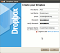
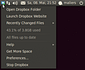

Dropbox
Dieser Artikel wurde für die folgenden Ubuntu-Versionen getestet:
Ubuntu 16.04 Xenial Xerus
Ubuntu 14.04 Trusty Tahr
Zum Verständnis dieses Artikels sind folgende Seiten hilfreich:
Dropbox  ist ein kommerzieller Online-Datenspeicher. Über ein Client-Programm werden automatisch neu angelegte Dateien über das Internet zu Dropbox hochgeladen oder Änderungen aktualisiert. Client-Programme gibt es für alle gängigen Betriebssysteme. Über eine Weboberfläche kann auch ohne den Client auf die Daten bei Dropbox zugegriffen werden. Allerdings gibt es dort für einzelne Dateien eine Größenbeschränkung von maximal 300 Megabyte. Möchte man größere Dateien hoch laden, muss zwingend der Client verwendet werden.
ist ein kommerzieller Online-Datenspeicher. Über ein Client-Programm werden automatisch neu angelegte Dateien über das Internet zu Dropbox hochgeladen oder Änderungen aktualisiert. Client-Programme gibt es für alle gängigen Betriebssysteme. Über eine Weboberfläche kann auch ohne den Client auf die Daten bei Dropbox zugegriffen werden. Allerdings gibt es dort für einzelne Dateien eine Größenbeschränkung von maximal 300 Megabyte. Möchte man größere Dateien hoch laden, muss zwingend der Client verwendet werden.
Der Dienst bietet standardmäßig 2 GiB Speicherplatz kostenlos an. Neben der Erweiterung des Speichers gegen Bezahlung besteht auch die Möglichkeit, über Nutzerwerbung den eigenen kostenlosen Speicher zu erweitern.
Weitere Funktionen sind
Revisionsverwaltung von Dateien
Freigabe von Dateien oder Ordner für Dritte über das Webfrontend und über das Kontextmenü im Dateimanager
Dropbox verschlüsselt die Daten, bevor sie auf den Webspeicher (Dropbox benutzt dazu Amazons Webstorage-Dienst S3) hochgeladen werden. Allerdings hat Dropbox die Kontrolle über den Schlüssel, also kann Dropbox hochgeladene Daten einsehen. Dem kann man relativ einfach mit einer eigenen Verschlüsselung entgegenwirken.
Installation¶
Dropbox an sich besteht lediglich aus einem im Hintergrund laufenden Dienst, welcher sich um die Synchronisation der Dateien kümmern. Der Dienst kann über die Kommandozeile gesteuert werden. Allerdings ist nur mit dem Dienst kein Hinzufügen von neuen Dateien möglich, dazu benötigt man auf dem jeweiligen Rechner noch einen Client.
Sowohl bei der Installation über die Paketquellen als auch über das Fremdpaket wird ein Client für Nautilus mit installiert. Beide Pakete haben aber keine_Abhängigkeiten zu Nautilus, so dass die Pakete auch ohne Probleme installiert werden können, wenn eine andere Ubuntu-Variante genutzt wird.
Aus den Paketquellen¶
Seit Ubuntu 11.10 ist ein Dropbox-Client für den Dateimanager Nautilus in den Ubuntu-Paketquellen enthalten. Dropbox passt sich damit perfekt in die GNOME-Desktopumgebung von Ubuntu und Ubuntu GNOME ein.
nautilus-dropbox (multiverse)
 mit apturl
mit apturl
Paketliste zum Kopieren:
sudo apt-get install nautilus-dropbox
sudo aptitude install nautilus-dropbox
Das Paket installiert dann im Hintergrund manuell den Dropbox-Dienst, welcher während der Paketinstallation nachgeladen wird.
Bei der Installation aus den Paketquellen erfolgt keine automatische Aktualisierung des Dropbox-Dienstes! Deshalb sollte man von Zeit zu Zeit prüfen, ob eine neuere Version verfügbar ist und diese dann manuell aktualisieren. Probleme mit der Paketverwaltung gibt es dabei nicht.
Fremdpakete¶
Dropbox stellt fertige 32-Bit und 64-Bit Pakete bereit. Mit der Installation der Pakete wird automatisch eine Paketquelle für Dropbox in das System integriert, die den Vorteil einer automatischen Aktualisierung der Software bietet.
Von Dropbox werden
DEB-Pakete  angeboten.
Die unterstützten Ubuntuversionen und Architekturen werden aufgelistet.
Nachdem man sie für die korrekte Ubuntuversion und Architektur geladen hat, müssen DEB-Pakete noch installiert werden.
angeboten.
Die unterstützten Ubuntuversionen und Architekturen werden aufgelistet.
Nachdem man sie für die korrekte Ubuntuversion und Architektur geladen hat, müssen DEB-Pakete noch installiert werden.
Hinweis!
Fremdpakete können das System gefährden.
Anschließend muss noch der proprietäre im Hintergrund laufende Dienst installiert werden.
Fremdquelle¶
Alternativ kann eine Fremdquelle auch manuell hinzugefügt werden.
Um aus der Fremdquelle zu installieren, muss man die folgenden Paketquellen freischalten:
Hinweis!
Zusätzliche Fremdquellen können das System gefährden.
deb http://linux.dropbox.com/ubuntu VERSION main
Um die Fremdquelle zu authentifizieren, kann man den Signierungsschlüssel mit folgendem Befehl importieren:
sudo apt-key adv --recv-keys --keyserver keyserver.ubuntu.com 1C61A2656FB57B7E4DE0F4C1FC918B335044912E
Nun kann man Dropbox über das folgende Paket installieren [1]:
dropbox
mit apturl
Paketliste zum Kopieren:
sudo apt-get install dropbox
sudo aptitude install dropbox
Anschließend muss der Dateimanager Nautilus neu gestartet werden.
Dienst installieren¶
Nach der Installation des Pakets muss noch der Dienst aus dem Internet geladen werden (dieser ist nicht im Paket enthalten). Dazu muss einmalig der Installationsassistent über "Internet -> Dropbox" gestartet werden. Über dieses kleine Programm wird dann der Dienst geladen und installiert und auch automatisch gestartet, wobei das Symbol von Dropbox im Benachrichtigungsfeld auftauchen sollte.
Installation hinter einem Proxy¶
Wenn die Installation des Diensts hinter einem Proxy erfolgt und der Installationsassistent hängt, weil er nicht zum Dropbox-Server durchdringt, sollte der Installationsassistent nicht über die GUI wie oben gestartet werden, sondern durch Eingabe dieses Befehls im Terminal:
dropbox start -i
Dann können die Proxy-Einstellungen über die Schaltfläche Connection settings der GUI so lange angepasst werden, bis die Verbindung hergestellt werden kann.
Kubuntu¶
Es gibt ein KDE-Servicemenü, welches viele sonst nur über Nautilus oder das Webfrontend verfügbare Funktionen bietet und von kde-apps heruntergeladen werden kann. Nachdem man das .tar.gz-Archiv entpackt [5] hat, wechselt man in das dadurch erstellte Verzeichnis und führt dort das Skript
./install-it.sh
aus. Das Servicemenü funktioniert nur, wenn man zuvor Dropbox installiert hat (siehe nächster Abschnitt). Die Bedienung ist ähnlich zu der für Nautilus beschriebenen, nur eben nicht auf diesen Dateimanager beschränkt.
Um die optische Integration in den Plasma-Desktop zu verbessern, gibt es einen Satz angepasster Symbole . Die Installation funktioniert wie dort beschrieben, nur dass es bei der aktuellen Version von Dropbox keinen icons-Ordner mehr gibt. Statt dessen müssen die Bilddateien aus dem Archiv in den Ordner ~/.dropbox-dist/images/hicolor/16x16/status/ verschoben werden.
Außerdem ist es empfehlenswert, noch folgende Pakete zu installieren, um alle Funktionen des Servicemenüs nutzen zu können:
klipper
sqlite3
python
python-m2crypto
xdg-utils
mit apturl
Paketliste zum Kopieren:
sudo apt-get install klipper sqlite3 python python-m2crypto xdg-utils
sudo aptitude install klipper sqlite3 python python-m2crypto xdg-utils
Xubuntu¶
Die Erweiterung Thunar Dropbox bietet für den Dateimanager Thunar eine Dropbox-Integration. Der Blogbeitrag How to Install Dropbox Plugin for Thunar in Ubuntu XFCE Desktop hilft bei der Installation weiter. Eine andere Möglichkeit ist im Artikel Thunar/Senden an zu finden. Aber in beiden Fällen gilt: bitte zuerst den folgenden Abschnitt beachten!
Sonstige Desktopumgebungen¶
Dropbox unterstützt offiziell nur GNOME als Desktopumgebung für Linux. Benutzt man eine andere Desktopumgebung oder eventuell gar keine - beispielsweise wenn man einen Server betreibt - dann muss man nicht auf Dropbox verzichten. Der Daemon läuft völlig unabhängig von der Desktop-Umgebung und braucht nicht einmal einen XServer.
Den Daemon kann man direkt bei Dropbox herunterladen. Es gibt ihn für 32-bit oder 64-bit . Durch den Download erhält man ein .tar.gz-Archiv, das man entpacken muss [5]. Das daraus resultierende Verzeichnis .dropbox-dist sollte auf jeden Fall direkt in das Homeverzeichnis geschoben werden. Wenn man nun Dropbox zum ersten Mal startet [4]
~/.dropbox-dist/dropboxd
erscheint der übliche Einrichtungsassistent. Nun muss man nur noch dafür sorgen, dass ~/.dropbox-dist/dropboxd in der eigenen Desktopumgebung automatisch geladen wird. Leider bindet sich Dropbox nicht direkt in andere Dateimanager als Nautilus ein. Die wichtigste Funktion von Dropbox - die Synchronisierung der Daten - funktioniert jedoch auch ohne Nautilus.
Einrichtung¶
Hinweis:
Wie eingangs erwähnt, ist der Account bei Dropbox kostenlos. Nur wer mehr Speicherplatz als die kostenlosen 2 GiB benötigt, muss für Dropbox bezahlen.
|  |
| Einrichtung des Accounts |
Direkt nach dem ersten Start von Nautilus muss Dropbox auf dem Rechner eingerichtet werden. Dazu muss zuerst die lokale Installation mit einem Account bei Dropbox verknüpft werden. Der Assistent, der einem bei der Einrichtung hilft, erscheint sofort nach dem Start von Nautilus.
Hier kann man nun einen neuen Account auf Dropbox anlegen oder - falls man Dropbox bereits auf einem anderen Rechner eingerichtet hat - den neuen Rechner zu einem schon bestehenden Dropbox-Account hinzufügen. Im letzten Schritt kann man das zu synchronisierende Verzeichnis auswählen, die Standardeinstellung ist ~/Dropbox.
Bedienung¶
Hinweis:
Mittlerweile bietet Dropbox die Möglichkeit der selektiven Synchronisation, d. h. es können Ordner von der Synchronisation aus- bzw. eingeschlossen werden. Wer dennoch weitere Ordner außerhalb des ~/Dropbox-Verzeichnisses synchronisieren möchte, der kann eine Verknüpfung (Symlink) setzen, die nach ~/Dropbox zeigt (Beispiel). So lassen sich weitere Ordner zur Synchronisierung hinzufügen.
Die Bedienung von Dropbox ist nun simpel. Alles, was man im Ordner ~/Dropbox im eigenen Homeverzeichnis ablegt, wird zu Dropbox hochgeladen und in Zukunft synchronisiert. Hat man also beispielsweise zwei Rechner zum eigenen Dropbox-Account hinzugefügt und kopiert auf einem Rechner eine Datei nach ~/Dropbox, so wird sie automatisch auf dem zweiten Rechner heruntergeladen.
Ändert man eine Datei innerhalb von ~/Dropbox, so wird nur die Änderung hochgeladen und auf dem zweiten Rechner wiederum synchronisiert. Die zu übertragenden Daten werden also so minimal wie möglich gehalten.
Symbol in Benachrichtigungsfeld¶
|  |
| Kontextmenü des Panel-Icons |
Dropbox erscheint als Symbol im Benachrichtigungsfeld des jeweiligen Desktop. Das Symbol ändert sich, je nachdem, was Dropbox gerade macht. Werden Daten hoch- oder heruntergeladen, so rotieren kleine Pfeile, sind alle Daten synchron, ist dies durch ein grünes Häkchen gekennzeichnet. Über einen Klick mit der rechten Maustaste auf das Icon gelangt man in ein Kontextmenü, über das man seinen lokalen Dropboxordner öffnen, das Webfrontend aufrufen, zuletzt geänderte Dateien einsehen, den Status des eigenen Accounts auslesen, Hilfestellung bekommen, den Account kostenpflichtig upgraden und auch Einstellungen vornehmen kann. Außerdem ist es hier möglich den im Hintergrund arbeitenden Dienst zu stoppen, worauf hin das Icon aus dem Panel verschwindet und Daten nicht mehr synchronisiert werden.
Im Reiter "Preferences -> General" lässt sich der Dropbox-Dienst vom aktuellen Account lösen und ggf. einem anderen Dropbox-Account zuordnen. Es besteht darüber hinaus die Möglichkeit, den Ort des zu synchronisierenden lokalen Dropboxordners festzulegen und zu wählen, ob der Dienst mit dem Systemstart automatisch anlaufen, das Symbol im Benachrichtigungsfeld angezeigt werden und eine Synchronisation bei Rechnern im gleichen lokalen Netzwerk über eben dieses erfolgen soll. Diese letzte Option beschleunigt die Synchronisation enorm.
Im Reiter "Network" kann man eine maximale Up- bzw. Downloadrate definieren sowie Einstellungen für einen zu benutzenden Internet-Proxy vornehmen.
Nautilus¶
| Dropbox in Nautilus |
Auch in Nautilus selber erscheint Dropbox. Alle Dateien oder Ordner in ~/Dropbox tragen von nun an zusätzliche Symbole. Dateien, die bereits vollständig mit Dropbox synchron sind, tragen einen grünen Haken. Dateien oder Ordner, die noch synchronisiert werden müssen, erscheinen mit zwei blauen rotierenden Pfeilen. So erkennt man schnell, ob der Stand der Datei aktuell ist.
Klickt man auf eine Datei oder einen Ordner innerhalb von ~/Dropbox mit der rechten Maustaste, so erscheint im Kontextmenü der zusätzliche Eintrag "Dropbox". Über diesen lassen sich im Webfrontend gelöschte Dateien sowie ältere Dateiversionen ansehen und herunterladen. Sollte man also einmal eine Datei oder einen Ordner geändert und gespeichert haben, so kann man über diese Funktion eine ältere Version heraussuchen und die fälschlicherweise gesicherte Version korrigieren. Auch eine Veröffentlichung von Dateien und Ordnern ist direkt über das Nautilus-Kontextmenü möglich.
Webfrontend¶
| Dropbox-Webfrontend |
Das Webfrontend ist letztendlich die Schaltstelle für Dropbox. Hier können ältere Revisionen von Dateien angesehen und wiederhergestellt, Dateien oder Ordner für Dritte freigegeben und natürlich auch Dateien aus der Dropbox herunter- bzw. hochgeladen werden.
So hat man von jedem Rechner aus Zugang zu den in der Dropbox gesicherten Daten und deren Änderungshistorie.
Dropbox manuell aktualisieren¶
Wie bereits weiter oben erwähnt, aktualisiert sich der im Hintergrund laufende Dropbox Dienst nicht automatisch, wenn Dropbox über das Paket nautilus-dropbox aus den Paketquellen installiert wurde. Es ist empfehlenswert regelmäßig in die Einstellungen von Dropbox zu schauen und einen Blick in die Release Notes Stable Build zu werfen, um zu prüfen ob der installierte Dropbox-Client noch aktuell ist. Die manuelle Aktualisierung lässt sich mit den folgenden drei Befehlen realisieren[4]:
$ dropbox stop ## stoppt den Dienst $ rm -rf ~/.dropbox-dist ## Löscht die veralten Hintergrunddienst-Dateien. Die eigentlichen Daten von Dropbox werden nicht angefasst. $ dropbox start -i ## startet den Dienst neu und lädt die aktuellen Hintergrunddienst-Dateien.
Tipps¶
Erweiterung des Gratisspeichers durch "Referrals"¶
Der zur Verfügung stehende Gratisspeicher kann durch das Werben weiterer Nutzer auf bis zu 18 GiB (2 GiB Grundspeicher + 32 mal 500 MiB für Nutzerwerbung) erweitert werden. Dazu ist es möglich, entweder vom Webfrontend generierte links, sogenannte Referrals zu versenden, die die umworbenen User dann nutzen können oder diese per Email-Kontakt oder diverse soziale Netzwerke zur Nutzung einzuladen. Der Werber und der Umworbene erhalten bei erfolgreicher Installation des Clients durch den Geworbenen jeweils 500 MiB zusätzlichen Gratisspeicher. Ein Forumeintrag mit Referral-Links, die von ubuntuusers.de-Nutzern eingestellt wurden, ist als registrierter Nutzer in der "Lounge" des Forums zu finden. Für Studenten und für zahlende Mitglieder ist es besonders interessant, denn sie erhalten Sonderkonditionen. Pro geworbenem Nutzer erhalten Premiumkunden 1 GiB gratis Zusatzspeicher. Die aktuellen Sonderkonditionen für Studierende sind der entsprechenden Website zu entnehmen: (www.dropbox.com/edu ).
Dropbox auf einem Server ohne XServer¶
Experten-Info:
Der Einsatz von Dropbox auf einem Server ohne grafische Oberfläche erfordert einige Kenntnisse mit dem Arbeiten mit Prozessen.
Selbst auf einem Server, der über keinen XServer verfügt, kann man Dropbox benutzen. Die Installation des Dropbox-Daemons kann wie oben beschrieben durchgeführt werden, allerdings kann ohne XServer die Verknüpfung mit einem Dropbox-Account nicht durchgeführt werden.
Für diese kann man entweder X-Forwarding über SSH benutzen und so das Fenster zur Aktivierung auf einem zweiten Linux-Rechner anzeigen lassen, oder man installiert Dropbox auf einem zweiten Linux-Rechner, führt auf diesem die Registrierung durch, beendet Nautilus sowie den Dropbox-Daemon und kopiert dann den Ordner ~/.dropbox von diesem Rechner in das Homeverzeichnis des eigenen Benutzers auf den Server.
Zumindest beim zweiten Fall wird die Sache etwas umständlich. Zum einen muss auch hier:
dropbox start -i
ausgeführt werden. Nach dem Download des Dienstes erscheint die Meldung:
Dropbox isn't running!
Jetzt
~/.dropbox-dist/dropbox start
ausführen, mit einem Browser den angegebenen Link öffnen, online anmeldem und auf Anfrage ein zweites Mal das Passwort eintragen. Erst jetzt ergibt:
dropbox status
das gewünschte Ergebnis, nämlich erst die Initialisierung, das Herunterladen der Dateiliste und schließlich die Synchronisierung.
Damit der Daemon dann automatisch beim Start des Rechners geladen wird, sollte man ihn im Bootprozess eintragen. Dies geht über einen Eintrag in der Datei /etc/rc.local:
su BENUTZER -c "/home/<user>/.dropbox-dist/dropboxd &"
Beispiel:
su manfred -c "/home/manfred/.dropbox-dist/dropboxd &"
Damit man über ein Terminal etwas Kontrolle und ein paar Informationen über Dropbox gewinnen kann, gibt es in den Foren von Dropbox das Skript dbcli.py . Dieses kann man benutzen, um Dropbox von einem Terminal aus zu steuern.
dbcli.py
Usage: bin/dbcli.py <command> [options] ... <command> [options] Available commands: status - Get overall status for the daemon. copypublic <file> - Copies the url to the clipboard (? I guess) install <x86/x86_64> - Tries to download the daemon and install it in your home directory. browse <folder> - Browse the specified folder in your browser. copygallery - Copies the gallery url to the clipboard. share <file> - Open the browser and shows share-information. file <file> - Get information about a file/folder. folder <folder> - Get information about a file/folder. help - Gives this. revisions <file> - Opens the revisions page in your browser for the specified file.
Alternativ (oder ergänzend) kann man für diesen Zweck das offizielle Skript dropbox.py nutzen.
Daten verschlüsselt speichern¶
Empfindliche Daten sollten nicht unverschlüsselt in einem Onlinespeicher wie Dropbox abgelegt werden. Zwei Möglichkeiten bieten sich hier an:
TrueCrypt glänzt durch einfache Bedienung, hohe Sicherheit und Interoperabilität. Besonders für Dropboxnutzer, die auch von Windows und Mac OS auf ihre verschlüsselten Dropbox-Daten zugreifen möchten, empfiehlt es sich. Dazu muss ein Truecrypt-Container in der Dropbox erstellt oder in sie hineingeschoben werden. Dieser wird dann an einem Punkt außerhalb der Dropbox eingehängt. Auch wenn der Container relativ groß ist, z.B. mehrere MiB, muss bei kleinen Veränderungen des Inhalts des Containers nicht immer der ganze Container synchronisiert werden. Hierzu muss lediglich die Option "Zeitstempel von Containerdateien beibehalten" in den TrueCrypt-Einstellungen aktiviert sein. Dies ist in TrueCrypt aber die Standardeinstellung (mehr dazu in diesem Blog-Eintrag
 ). Es sollte allerdings beachtet werden, dass Dropbox den Container nur synchronisiert, wenn er geschlossen ist. Dieses Verhalten kann in manchen Fällen zu ärgerlichen Dateikonflikten führen, vor allem wenn von zwei PCs gleichzeitig im Container gearbeitet wird. Mehr dazu im Blogbeitrag Warum TrueCrypt bei mir nix auf der Dropbox zu suchen hat (06/2011).
). Es sollte allerdings beachtet werden, dass Dropbox den Container nur synchronisiert, wenn er geschlossen ist. Dieses Verhalten kann in manchen Fällen zu ärgerlichen Dateikonflikten führen, vor allem wenn von zwei PCs gleichzeitig im Container gearbeitet wird. Mehr dazu im Blogbeitrag Warum TrueCrypt bei mir nix auf der Dropbox zu suchen hat (06/2011).
EncFS bietet sich an, wenn nur mit unixoiden Betriebssystemen gearbeitet wird, also z.B. mit mehreren Ubuntu-Rechnern, es gibt aber auch eine experimentelle Version
für Windows. EncFS hat gegenüber TrueCrypt den Unterschied, dass es nicht mit Containern arbeitet, sondern Dateien verschlüsselt, die gesamte Ordner- und Dateistruktur aber beibehält. Das ist nicht unbedingt ein Vorteil, da man Dateigrößen und die Länge der Dateinamen auch an den verschlüsselten Daten erkennen kann. Günstig ist jedoch, dass man dann nicht mit einem "klobigen" Container arbeiten muss, dessen Größe irgendwann ausgereizt ist. Bei der Benutzung von EncFS erstellt man einen verschlüsselten Ordner innerhalb der Dropbox und hängt ihn an einem Ort außerhalb der Dropbox ein. Das Skript zum Einhängen des Ordners speichert man am besten in der Dropbox (aber natürlich außerhalb des verschlüsselten Ordners).
Weitere Informationen zu Verschlüsselung gibt es im Artikel Sicherheit und im Blogbeitrag Dropbox verschlüsseln mit encfs (07/2013).
Mehrere Dropbox-Instanzen verwenden¶
Leider ermöglicht es Dropbox nicht selber, einen zweiten Account zu nutzen, deswegen muss man einen kleinen Workaround machen, um 2 (oder mehr) Accounts zu verwenden. Bei der folgenden Anleitung wird davon ausgegangen, dass bereits eine funktionierende Dropbox-Instanz installiert ist, welche beim Anmelden auch automatisch gestartet wird und problemlos funktioniert. Wenn manuell installiert wurde, müssen möglicherweise noch die Pfade angepasst werden!
Als Erstes wird ein neuer versteckter Ordner im eigenen Home-Ordner angelegt:
mkdir ~/.dropbox2
Anschließend muss eine zweite Dropbox-Instanz in den vorher angelegten Ordner installiert werden. Dazu werden folgende Befehle der Reihe nach ausgeführt:
HOME=~/.dropbox2 /usr/bin/dropbox start -i HOME=~/
Nach dem zweitem Befehl startet die grafische Installationsverwaltung von Dropbox, wo dann z.B. auch der Arbeitsordner geändert werden kann. Nach dem Abschluss der grafischen Installation muss noch der letzte Befehle ausgeführt werden.
Um diese zweite Dropbox-Instanz automatisch zu starten, ist noch folgendes Skript nötig, welches dann auch in den Autostart eingetragen werden muss:
1 2 | #!/bin/bash HOME=~/.dropbox2 /usr/bin/dropbox start |
Bei diesem Skript ist es nicht mehr nötig, dass -i hinter den Startbefehl für Dropbox zu schreiben, wie es oben bei der Installation der zweiten Dropbox-Instanz noch notwendig war!
Dropbox-Daemon in Skripten¶
Möchte man den Dropbox-Client nicht ständig laufen lassen, sondern nur kurz zur Synchronisierung des Dropboxordners ausführen, hilft folgender Einzeiler:
1 | dropbox start; while [[ $(dropbox status) != Aktualisiert ]]; do sleep 0.5; done; dropbox stop |
Diese Codezeile ist insbesondere in Skripten nützlich, zum Beispiel um schnell bestimmte Dateien zu packen, zu verschlüsseln und online zu sichern:
1 2 3 4 5 6 7 | #!/bin/bash # Packen des Inhalts des aktuellen Ordners, Verschlüsselung mit dem Passwort aus pw.txt, Synchronisation mit Dropbox tar -czf ~/Dropbox/Sicherung.tgz . ccrypt -fk pw.txt ~/Dropbox/Sicherung.tgz dropbox start while [[ $(dropbox status) != Aktualisiert ]]; do sleep 0.5; done dropbox stop |
Alternativen¶
Der Client für Dropbox ist unfreie Software. Verschiedene Projekte arbeiten an freien und offenen Alternativen für den Aufbau eines eigenen Onlinespeichers:
sucsynct - automatische Unison Synchronisation über eigene (NAS) Server oder direkt mit anderen Computern/Speichermedien
SparkleShare - basiert auf Mono
Syncany
(in Entwicklung)ownCloud - eigene Cloud-Dienste betreiben
Problembehebung¶
Symbol in Benachrichtigungsfeld fehlt / verschwindet¶
Auf den verschiedensten Ubuntu-Versionen kann es vorkommen, dass das Dropbox Icon aus dem Benachrichtigungsfeld verschwindet.
Durch Ausführen des folgendes Befehls kann man es für die aktuelle Sitzung wieder anzeigen lassen:
dropbox stop && DBUS_SESSION_BUS_ADDRESS="" dropbox start
Weitere Hinweise und Tipps sind hier verfügbar:
Dropbox is running from an unsupported location¶
Dieser Fehlermeldung erhält man, wenn man unter Ubuntu 12.04 das Paket nautilus-dropbox aus den offiziellen Paketquellen installiert hat. Hintergrund sind Inkompatibilitäten zwischen dem offiziellem Paket und dem Fremdpaket (siehe 909488 und nautilus-dropbox questions ).
Anschließend stehen zwei Möglichkeiten zur Auswahl:
"Don't Ask Again" - die Version aus den offiziellen Paketquellen weiternutzen
"Install Dropbox Correctly" - die offizielle Version von Dropbox Inc. installieren
Synchronisierung mit Mac OS X¶
Manche Software für Mac OS X speichert Dateien mit erweiterten Dateiattributen ab. Diese werden von den Standarddateisystemen in Ubuntu zwar unterstützt, sind aber nicht von Haus aus aktiviert. Nutzt man nun Dropbox, um zwischen einem Mac und einem Ubuntu mit ext3- oder ext4-Dateisystem zu synchronisieren, werden solche Dateien nur dann zum Ubuntu-Rechner übertragen, wenn die ext-Partition mit der Option user_xattr eingehängt ist. Andernfalls werden die Dateien zwar von OS X zu Dropbox, aber nicht von Dropbox zu Ubuntu übertragen. Wird eine in Ubuntu bereits vorhandene Datei mit OS X verändert und mit erweiterten Attributen gespeichert, wird sie aus dem Ubuntu-Ordner gelöscht.
Zur Lösung des Problems kann man im fstab-Eintrag der Partition, auf welcher der Dropbox-Ordner liegt, die Option user_xattr hinzufügen.
Deinstallation von Dropbox¶
Bei der Deinstallation von nautilus-dropbox werden nicht alle Dateien der Dropbox-Installation entfernt. Mit den folgenden Befehlen kann man Dropbox vollständig (abgesehen vom ~/Dropbox) entfernen.
sudo apt-get remove nautilus-dropbox rm -rvf ~/.dropbox ~/.dropbox-dist
Hohe Systemlast, häufige Abstürze oder Einfrieren des Dropbox-Daemons¶
Hier hilft es meist nur alle lokalen Dropbox-Einstellungsordner zu löschen und das Programm aus dem Terminal neu zu starten. Die zu löschenden Ordner sind:
~/.dropbox
~/.dropbox-dist
~/Dropbox/.dropbox.cache
Anschließend kann man Dropbox mit dem Befehl
1 | dropbox start -i |
neu starten.
Links¶
Dropbox ordentlich aktualisieren
- Blogbeitrag, 05/2011Dropbox verschlüsseln mit encfs
- Blogbeitrag, 07/2013Dropbox-Alternativen auf Open-Source-Basis – nicht trivial
- t3n 09/2011Cloud-Dienste
 Übersichtsartikel
Übersichtsartikel
- Erstellt mit Inyoka
-
 2004 – 2017 ubuntuusers.de • Einige Rechte vorbehalten
2004 – 2017 ubuntuusers.de • Einige Rechte vorbehalten
Lizenz • Kontakt • Datenschutz • Impressum • Serverstatus -
Serverhousing gespendet von